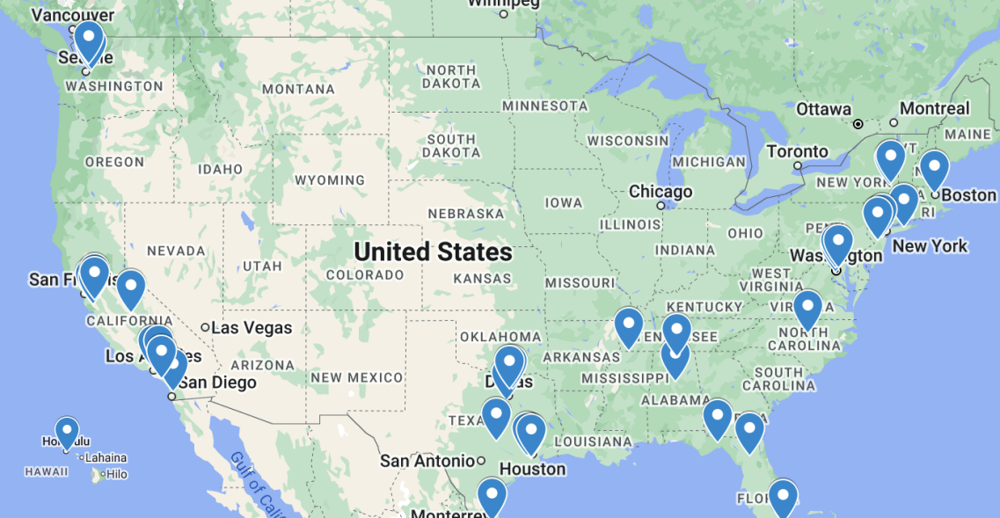

The inaugural 2025 Texas Science Bowl invitational took place on January 19th, 2025. A whopping 75 high school teams registered for the event, 48 of these teams, consisting of over 200 players, were invited to participate in the field. Students from coast to coast participated in the tournament, as shown by the map below:

Through 13 rounds of strenuous competition, 47 teams were sequentially eliminated, leaving just one winning team.
Congratulations to Mission San Jose High School!
The top teams were recognized and rewarded with $1200 in prize money at the conclusion of the tournament.
The full competition bracket can be found here.
The individual statistics for all participating players can be found here.
Credits
President
Benjamin Lin
The University of Texas at Austin Involvement
Ravi Adluru
Param Bajaj
Thai Bui
Christina Gu
Kason Gu
Swayam Gupta
Albert Kyi
Aidan
Lai
Sam Lin
Jason Nguyen
Michael Nguyen
Warith Rahman
Andy Teng
Michael Xiang
Ashley
Yang
Anthony Yang
Yochen Zhong
2024 West Windsor-Plainsboro High School North Science Bowl Team
Aldric Benalan
Krutharth Vaddiyar
Aprameya Tripathy
Eric Wang
External Writers and Playtesters
Aryan Bora
Kian Dhawan
Shreyas Ekanathan
Edwin He
Edward Li
Yunyi Ling
Aryan Morasa
Andrey
Nikitin
Ethan Song
Aashray Chegu Vijay
Emmanuel Zheng
David Zhou
Additional Moderators
Boheng Cao
Alexander Chang
Harry Jin
Richard Kao
Maxwell Kim
Naveen Mukkatt
Isaac Nikolayev
Anagha
Ramprasad
Kanika Rehani
Anthony Xu